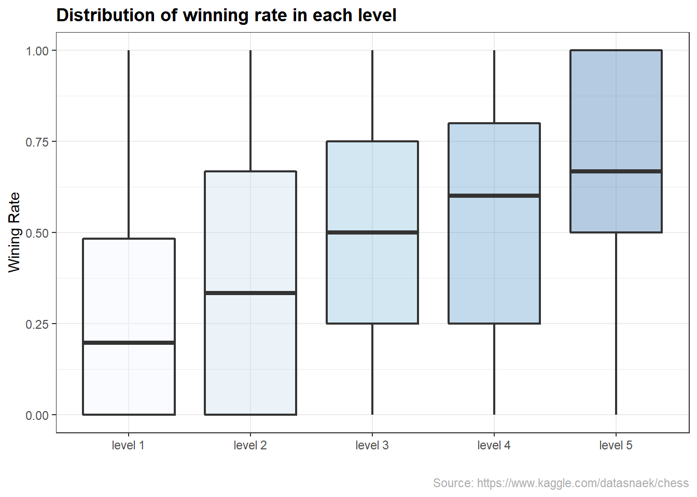
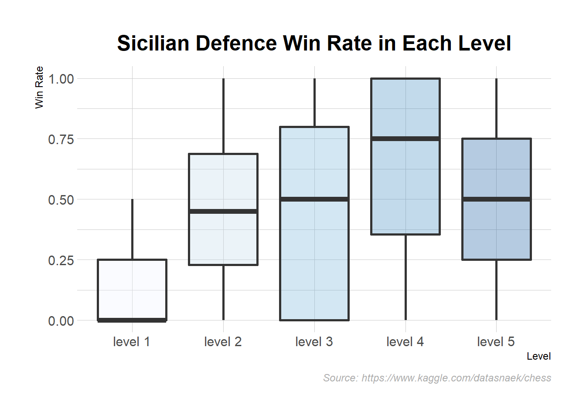

Chapter 5 Results
Top 10 players in each ranks


## # A tibble: 20 x 2
## opening_name counts
## <chr> <int>
## 1 Sicilian Defense 452
## 2 Queen's Pawn Game 221
## 3 French Defense 198
## 4 Ruy Lopez 173
## 5 King's Pawn Game 170
## 6 Italian Game 154
## 7 English Opening 138
## 8 Philidor Defense 115
## 9 Caro-Kann Defense 104
## 10 Scandinavian Defense 97
## 11 Zukertort Opening 80
## 12 Four Knights Game 71
## 13 Scotch Game 68
## 14 Queen's Gambit Declined 66
## 15 Indian Game 61
## 16 Van't Kruijs Opening 56
## 17 Bishop's Opening 53
## 18 Modern Defense 51
## 19 Slav Defense 46
## 20 Hungarian Opening 37
